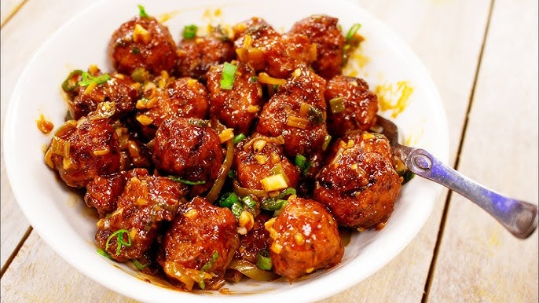

Manchurian

Description:
Manchurian is a class of Indian Chinese dishes made by roughly chopping and deep-frying ingredients such as chicken, cauliflower (gobi), prawns, fish, mutton, and paneer, and then sautéeing them in a sauce flavored with soy sauce.
Ingredients:
For the Vegetable Balls:
- Finely chopped cabbage
- Grated carrots
- Chopped onions
- Ginger-garlic paste
- Salt and black pepper
- Cornstarch and all-purpose flour (for binding)
- Oil for deep frying
For the Sauce:
- Oil
- Chopped garlic and ginger
- Chopped spring onions
- Soy sauce
- Chilli sauce (optional)
- Tomato ketchup (optional)
- Cornstarch slurry (cornstarch mixed with water)
- Salt and pepper to taste
- Green chilies (optional)
- Vinegar (optional)
- Coriander leaves for garnish
Steps:
- Prepare the Vegetable Balls
- Prepare the Sauce
- Combine and Serve
Home